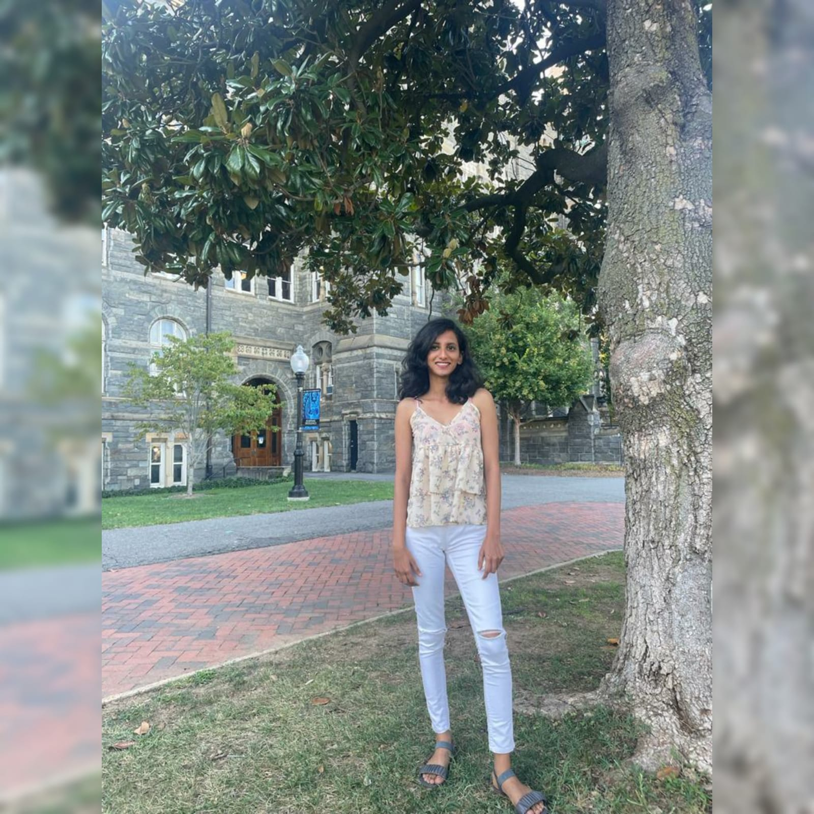

About meHello there! My name is Sangeetha, I studied computer science in my undergraduate and worked as a web developer for two years. With my computer science background and work experience, I now look forward to having a career in Data Science. I trust a career in Data Science is need of the time, intellectually challenging, and equally rewarding. I aspire to make a significant contribution to ongoing research projects which will have a greater impact on all components of the society. Why I Chose Data Science?I worked on a project to find underground water to dig borewells. 70% of Indian agriculture is dependent on underground water. Our project's main goal was to help find the underground water to improve agriculture in a relatively dry district in India. This project made me realise that data science can find solutions to the problems at grass roots. A little background:I graduated from Visweraya technologcal University in Bachelor of Engineering in Information science and technology. I worked as a full stack web developer for two years and then as an analyst in a different organization. I was part of a no plastic campaign in the organization I worked for, and I was the head of the campaign. The main goal was to create awareness on harmful effects of plastic and reduce the use of single-use plastic. I also campaigned for a female candidate in District council elections in a rural district of India. In my free time I enjoy watching cricket, tv shows and web series. I also dance a little. |
 |
Academic Interests- Machine Learning, Data Science and Analytics - Data Structure, and Algorithms |
Education2019: Bachelor of Engineering in Information science and technology. |